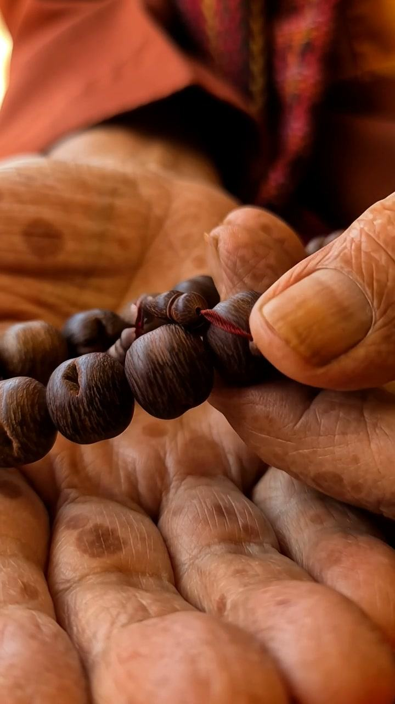

天然沉香的油线自然不规则，深浅不一，有断续，木质纹理还在，油脂和木质交错生长。每一颗珠子的纹理都不一样，整串珠子看起来有变化。
要警惕的是：油线太整齐、太黑，像画上去的；整串珠子纹理几乎一模一样；表面像刷了一层漆，木纹被盖住了。这些多半是泡油、染色或压缩料。
珠孔是手串最容易露破绽的地方。正常的珠孔孔口干净，内壁能看到木质颜色，孔道顺直。用强光手电照一下孔口和内壁，看得更清楚。
孔口有胶质反光、黑色残留、油渍，或者孔内壁发黑发亮，基本就是注胶或泡油。压缩料的珠孔内壁常能看到颗粒感，木纹是断的。
重量和油脂含量有关，但跨度很大：同样 8mm、108 颗的手串，天然料从十几克到三十多克都有可能，具体看产区、油脂和结香程度。所以克重只能横向对比同规格、同产区的料，单看克重没有意义。
更要小心的是，注胶、注油、压缩都会增重，“压手”不等于“油多”。拿重量当唯一标准，等于给造假开绿灯。
室温下把手串放在鼻下轻轻闻，天然沉香香味很淡，凑近才闻得到，凉意、甜意若有若无。用手搓热几颗珠子再闻，香味会出来一点，但依然不冲、不辣。
常温下香气冲鼻、满屋飘香，或者香味单一发甜、带化学味的，大概率泡过油或加了香精。天然沉香的香是沉的、稳的，不会刺鼻。
正规的手串应该有一物一证：证书上的照片、克重、编号和你手里这串一一对应，出报告的机构有 CMA 资质。批量通用证书、货证分离，等于没证。
再问溯源：产地、批次、结香方式能不能说清？说不清、含糊其辞的，先别买。溯源说得清的商家，不怕你问。
越重越好？不对。注胶、压缩都能增重，重量只说明密度，不说明真假和品质。
越黑越好？不对。太黑发亮反而可能是泡油或染色。天然沉香颜色深浅不一，棕褐为主，过渡自然。
| 检查项 | 正常表现 | 要警惕的表现 |
|---|---|---|
| 纹理油线 | 自然不规则，深浅不一，每颗不同 | 太整齐、太黑，像画上去的 |
| 珠孔 | 孔口干净，内壁见木质 | 有胶光、油渍、黑色残留 |
| 重量 | 同规格横向对比有差异 | 只看压手，忽视注胶增重 |
| 气味 | 室温淡，搓热后香出不冲 | 冲鼻、单一甜香、化学味 |
| 证书 | 一物一证，机构有 CMA | 批量通用证，货证分离 |